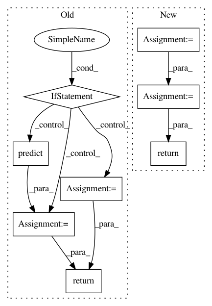

c09ca92e84f45c61f9213a32c7f01627fd467174,deepchem/models/tensorgraph/tensor_graph.py,TensorGraph,predict_proba_on_batch,#TensorGraph#Any#Any#,178
Before Change
if not self.built:
self.build()
if sess is None:
saver = tf.train.Saver()
with tf.Session() as sess:
saver.restore(sess, self.last_checkpoint)
with self._get_tf("Graph").as_default():
retval = predict()
else:
retval = predict()
if self.mode == "classification": // sample, task, class
retval = np.transpose(retval, axes=[1, 0, 2])
elif self.mode == "regression": // sample, task
retval = np.transpose(retval, axes=[1, 0])
return retval
def predict(self, dataset, transformers=[], batch_size=None):
Uses self to make predictions on provided Dataset object.
After Change
return self.predict_on_generator(generator)
def predict_proba_on_batch(self, X, sess=None):
dataset = NumpyDataset(X=X, y=None)
generator = self.default_generator(dataset, predict=True, pad_batches=False)
return self.predict_proba_on_generator(generator)
def predict(self, dataset, transformers=[], batch_size=None):
Uses self to make predictions on provided Dataset object.
In pattern: SUPERPATTERN
Frequency: 4
Non-data size: 8
Instances
Project Name: deepchem/deepchem
Commit Name: c09ca92e84f45c61f9213a32c7f01627fd467174
Time: 2017-04-12
Author: Karl
File Name: deepchem/models/tensorgraph/tensor_graph.py
Class Name: TensorGraph
Method Name: predict_proba_on_batch
Project Name: IBM/adversarial-robustness-toolbox
Commit Name: b2892275c7365da5df5ea96cbef587ea1ba6407e
Time: 2020-03-29
Author: mathsinn@ie.ibm.com
File Name: art/utils.py
Class Name:
Method Name: compute_success
Project Name: IBM/adversarial-robustness-toolbox
Commit Name: ef005b7af46c99ab6aec809a56bb29c9aaeaff73
Time: 2020-04-06
Author: mathsinn@ie.ibm.com
File Name: art/utils.py
Class Name:
Method Name: compute_success
Project Name: donlnz/nonconformist
Commit Name: aab2ef03ff533c1160742fafd2bf12133e227ddb
Time: 2015-03-19
Author: henrik.linusson@gmail.com
File Name: nonconformist/ensemble.py
Class Name: AggregatedCp
Method Name: predict